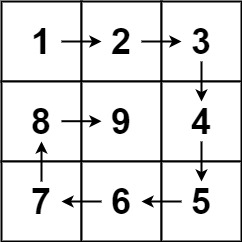

59. 螺旋矩阵 II
四边界模拟：按 上→右→下→左 每填完一条边就把对应边界向内收一格，填满 n² 个为止。
思路
- 四条边界
top/bottom/left/right围住还没填的区域，值v从 1 递增。 - 每轮依次填上边（左→右）、右边（上→下）、下边（右→左）、左边（下→上）。
- 每填完一条边立刻收边界并判越界（如
++top > bottom就 break），单行、单列也不会重复填。
图解
最优解
1class Solution {2 public int[][] generateMatrix(int n) {3 int[][] ans = new int[n][n];4 // 四条边界围住还没填的区域，v 从 1 递增5 int top = 0, bottom = n - 1, left = 0, right = n - 1;6 int v = 1;7 while (true) {8 // 上边：左 → 右9 for (int j = left; j <= right; j++) ans[top][j] = v++;10 if (++top > bottom) break;11 // 右边：上 → 下12 for (int i = top; i <= bottom; i++) ans[i][right] = v++;13 if (--right < left) break;14 // 下边：右 → 左15 for (int j = right; j >= left; j--) ans[bottom][j] = v++;16 if (--bottom < top) break;17 // 左边：下 → 上18 for (int i = bottom; i >= top; i--) ans[i][left] = v++;19 if (++left > right) break;20 }21 return ans;22 }23}题目
给你一个正整数 n ，生成一个包含 1 到 n2 所有元素，且元素按顺时针顺序螺旋排列的 n x n 正方形矩阵 matrix 。
示例 1：

输入：n = 3 输出：[[1,2,3],[8,9,4],[7,6,5]]
示例 2：
输入：n = 1 输出：[[1]]
提示：
1 <= n <= 20
题面取自力扣当前版本。
数据快照 2026-11-04。题面版权归力扣所有，本站点仅供本人学习使用，请勿对外发布。